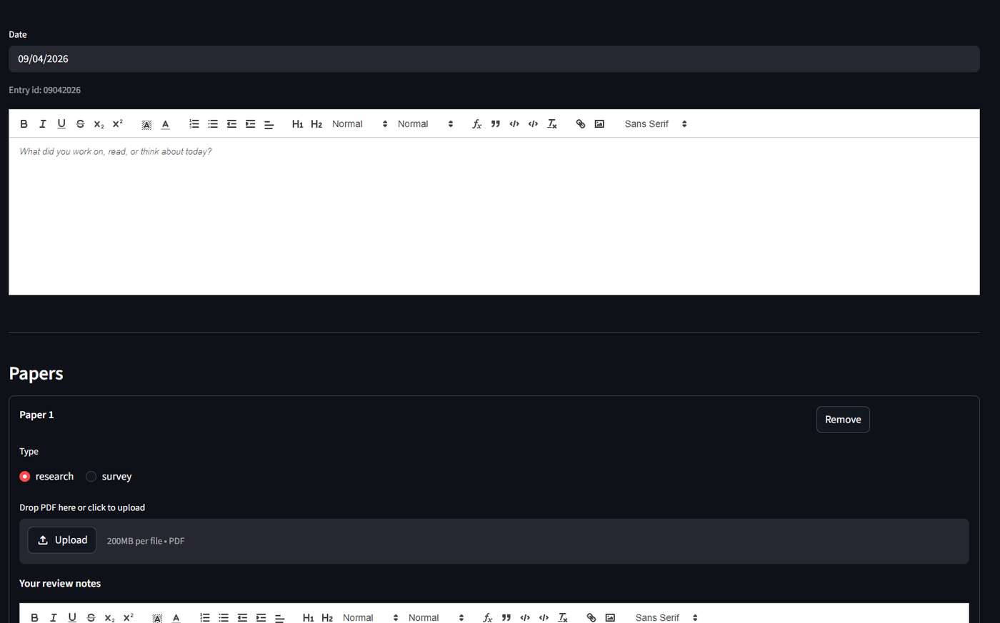
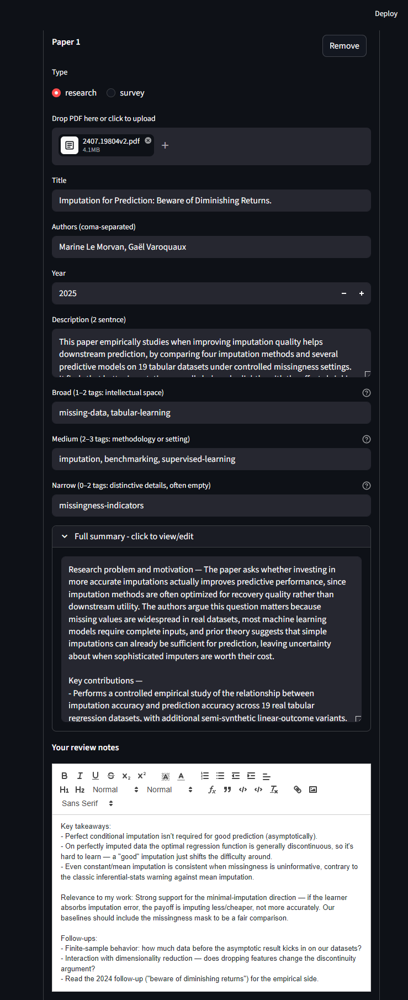
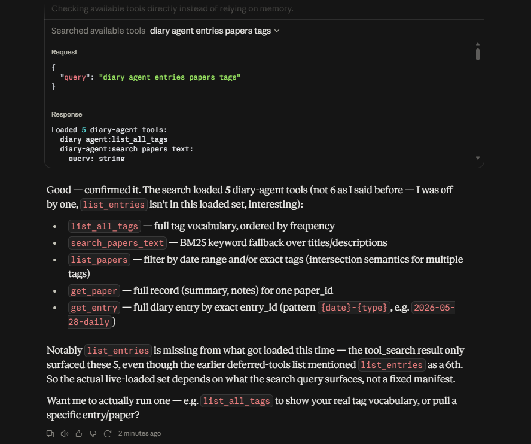
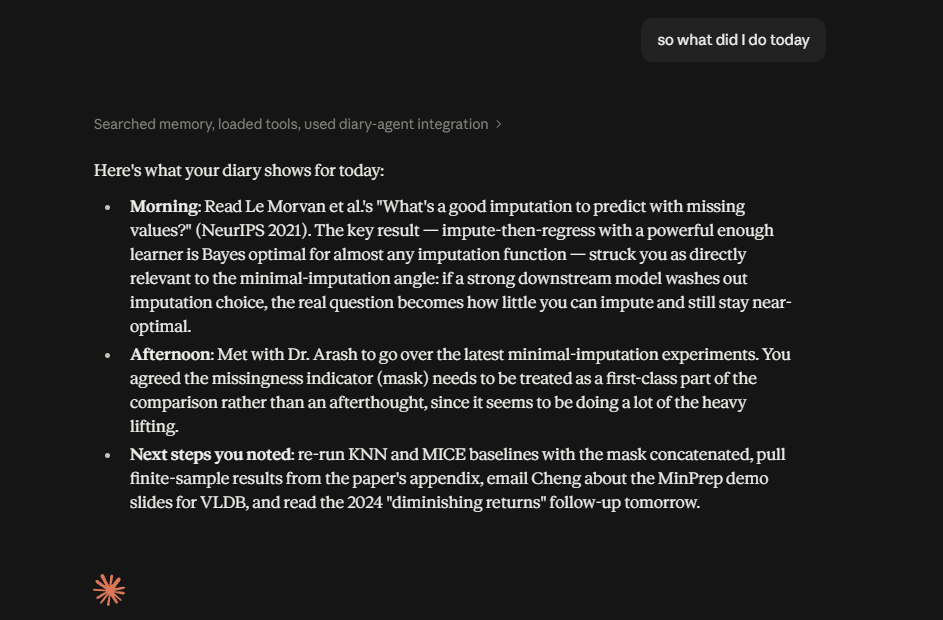
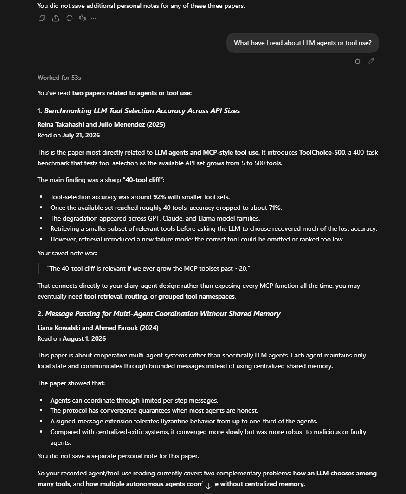
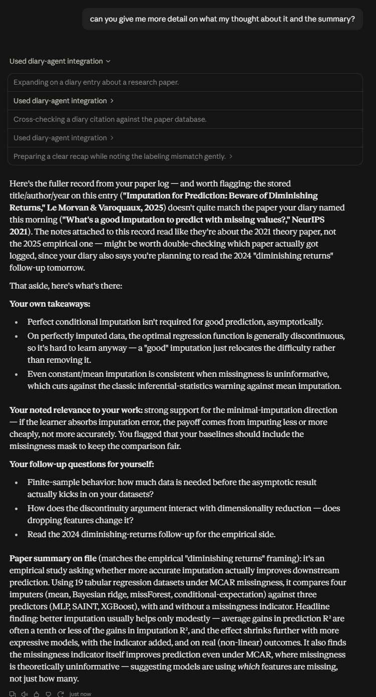

Project · Independent
Diary Agent
A personal knowledge system I built and run in production — it turns my daily journal into structured recaps and a to-do list, and lets an AI assistant answer questions over my notes and paper library.
Overview
Diary Agent is a system I use every day. Each night it reads my journal entry and produces a recap of any meetings and a to-do list pulled from what I actually committed to. It also keeps a library of research papers I've read — auto-tagged and summarized — and exposes the whole knowledge base to an AI assistant, so I can ask questions in plain language instead of digging through files.

How it works
Capture is structured. When I log a paper, the system stores the PDF and auto-generates a tiered set of tags (broad / medium / narrow) and a summary, so the library stays searchable without manual bookkeeping.

The nightly job runs a two-stage LLM pipeline: meeting detection and to-do extraction, then a pass that cleans up duplicates. The extraction prompt is a decision tree that knows when it runs — about 1 AM the next day — so phrases like "tonight" resolve to the past and casual or aspirational mentions don't turn into false to-dos.
Everything — diary and papers — is served through a Model Context Protocol (MCP) server, which exposes the knowledge base as tools an AI client can call for full-text and tag search over SQLite (FTS5).

Asking it anything
Because the knowledge base is exposed over MCP, I can query it from any MCP-capable assistant. I've used it from both the Claude desktop app and ChatGPT — same server, same data, either client.



Running it in production
It's deployed on AWS EC2 with a FastAPI backend and a Streamlit UI, reached through a Cloudflare Tunnel with Cloudflare Access handling auth, and driven by a cron job for the nightly recap. I profiled memory to find the true baseline, separated app load from dev-tooling overhead, and right-sized the instance (t3.medium → t3.micro) — cutting monthly cost roughly 4× without touching the workload.
← Back to home